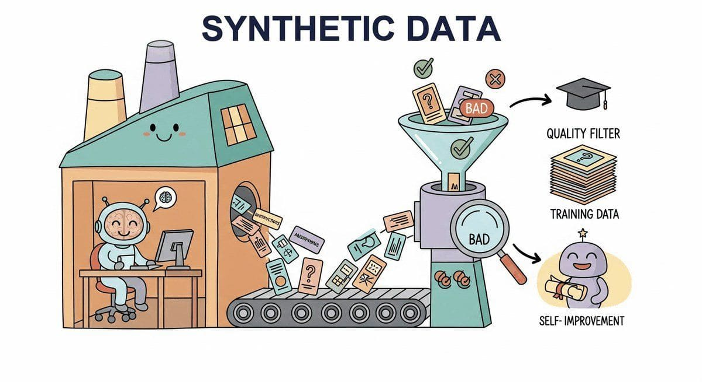

"The map is not the territory, but a sufficiently detailed map can teach you to navigate it."
Synth, Self-Generating AI Agent
Part III used LLMs as they came from the lab. Part IV is where you adapt them. The first prerequisite for adaptation is data, and the field has discovered that synthetic data, generated by larger models, can replace huge fractions of human-labeled data. This chapter covers Self-Instruct, Evol-Instruct, Magpie, distillation pipelines, and the quality controls that prevent synthetic data from poisoning your model.
Chapter Overview
Stanford's Alpaca dataset cost roughly $600 of OpenAI credits to generate, and it ignited the open instruction-tuned LLM boom. The same year, Microsoft's Orca and Meta's Self-Instruct showed you could distill a frontier model into a 7B student that beat hand-labeled baselines on most benchmarks. Synthetic data went from research curiosity to default ingredient in three quarters, and it is now the bottleneck-breaker for most fine-tuning projects: cheaper than human labels, more controllable, and scalable to the millions of examples that alignment runs assume.
This chapter covers the full lifecycle of synthetic data: from foundational principles and generation pipelines through quality assurance, LLM-assisted labeling, and weak supervision. You will learn how to use LLMs as simulators to generate realistic user interactions, build automated red-teaming datasets, create evaluation harnesses, and construct preference pairs for reinforcement learning from human feedback (RLHF, covered in Chapter 20). Equally important, you will learn the risks: model collapse from training on synthetic outputs, bias amplification, and data contamination.
By the end of this chapter, you will be able to design end-to-end data generation pipelines, implement quality filtering and deduplication strategies, combine LLM labels with human oversight through active learning, and apply weak supervision to create large labeled datasets programmatically. These skills form the essential foundation for the fine-tuning and parameter-efficient adaptation chapters that follow.
High-quality training data is the bottleneck for most fine-tuning projects. This chapter teaches you to generate, filter, and validate synthetic data using LLMs themselves, a technique that directly enables the fine-tuning workflows in Chapters 14 and 15 and the alignment pipelines in Chapter 20.
- Explain the motivations, benefits, and risks of synthetic data generation, including model collapse, bias amplification, and data contamination
- Build LLM-powered data generation pipelines using Self-Instruct, Evol-Instruct, and persona-driven techniques (building on Chapter 14's prompt engineering foundations) to create instruction-response pairs, conversations, and preference data
- Use LLMs as simulators to generate synthetic users, red-teaming scenarios, evaluation test sets, and A/B testing data
- Implement automated quality assurance workflows using LLM-as-judge scoring, deduplication (exact, near-duplicate, semantic), and multi-dimensional filtering
- Design LLM-assisted labeling workflows with confidence-based routing, active learning, and human-in-the-loop verification using tools like Argilla and Label Studio
- Apply weak supervision and programmatic labeling with labeling functions, label aggregation models, and cost-quality tradeoff analysis
- Integrate open-source tools such as Distilabel, Argilla, and Snorkel into production data pipelines
- Generate synthetic reasoning traces and chain-of-thought data for training reasoning model capabilities, including verification and filtering of reasoning chains
- Apply data augmentation techniques (EDA, back-translation, LLM-powered paraphrasing) to expand small datasets while preserving label accuracy
- Evaluate the quality dimensions of synthetic datasets: diversity, accuracy, consistency, and naturalness, preparing data for fine-tuning (Chapter 16) and alignment (Chapter 18)
Prerequisites
- Chapter 11: LLM APIs and Tooling (API calls, structured outputs, batching)
- Chapter 12: Prompt Engineering (few-shot prompting, system prompts, output formatting)
- Chapter 13: Hybrid ML+LLM Architectures (LLM-as-judge, cost modeling)
- Familiarity with Python, pandas, and basic ML evaluation metrics (covered in detail later in the book)
- Understanding of classification, labeling, and annotation concepts
Sections
- 15.1 Principles of Synthetic Data Generation Data is the bottleneck, not the model. Entry
- 15.2 LLM-Powered Data Generation Pipelines From manual curation to automated factories. Entry
- 15.3 Quality Assurance & Data Curation Generation is easy; curation is where the value lies. Intermediate
- 15.4 LLM-Assisted Labeling & Active Learning The best labeling workflows combine LLM speed with human judgment. Intermediate
- 15.5 Weak Supervision & Programmatic Labeling Replace hand-labeling with programming. Intermediate
- 15.6 Synthetic Reasoning Data Think of synthetic reasoning data like training an apprentice chef. Advanced
- 15.7 Data Augmentation for LLMs Techniques for expanding and diversifying training data through paraphrasing, back-translation, and LLM-driven augmentation. Advanced
Objective
Build a complete synthetic-data pipeline that produces a clean instruction-tuning dataset for a narrow task (e.g., "rewrite legal jargon as plain English"). You will use seed-and-grow generation, filter with quality heuristics, and validate with a small human-rated sample. The output feeds directly into Lab 17.
Steps
- Step 1: Define the task + 20 seeds. Pick a narrow task (legal-to-plain, code-to-comments, English-to-emoji-summary). Hand-write 20 high-quality seed examples in
seeds.jsonlwith{"instruction","input","output"}. - Step 2: Self-instruct expansion. Prompt GPT-4o with 3 random seeds plus "Generate 5 new, diverse examples in the same format." Loop 200 times to reach ~1000 examples. Save raw output to
raw.jsonl. - Step 3: Deduplicate. Use
sentence-transformers/all-MiniLM-L6-v2to embed instructions. Cluster by cosine similarity >0.9; keep one per cluster. Expect to drop 15 to 30%. - Step 4: Quality filter. Run a second LLM (Claude Haiku) as a binary judge: "Is this example well-formed and on-task? yes/no". Drop "no". Aim for >80% acceptance.
- Step 5: Human sanity-check. Hand-rate 50 random examples on a 1 to 5 scale. Mean <3.5 means the pipeline is broken; iterate on the generation prompt. Mean >4.0 means ship.
- Step 6: Library shortcut. Re-run the pipeline using
distilabelfrom Argilla (~30 lines for the whole thing). Compare quality scores and runtime to your from-scratch version.
Expected Output
Expected time: 3 to 4 hours. Difficulty: intermediate. Artifact: sft_clean.jsonl with ~700 examples + quality report.
What's Next?
Next: Chapter 16: Fine-Tuning Fundamentals. You can now generate synthetic training data; Chapter 16 shows you what to do with it. We cover the full SFT pipeline: data preparation, loss masking, instruction templates, training-loop construction, hyperparameter selection, and the failure modes (catastrophic forgetting, distribution shift) that separate a working fine-tune from an expensive mistake.